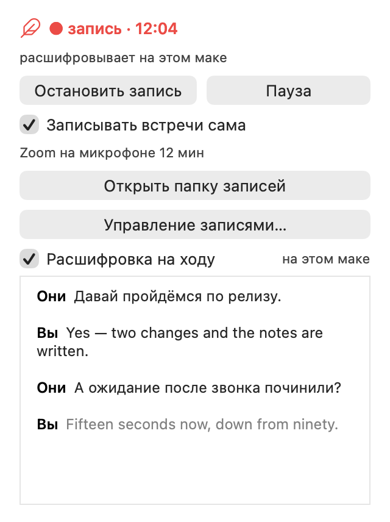

Запускает и останавливает запись автоматически.
Записывает и расшифровывает онлайн-встречи. Автоматом.
Amanu работает с любыми звонками — Zoom, Google Meet, Телеграм, Вацап. Запускает и останавливает запись автоматически, определяет говорящих и пишет качественную выжимку каждой встречи.
Бесплатно · открытый исходный код · нотаризован Apple

Диаризация
в расшифровке реплики разложены по людям, а не слиты в один поток.
Качественные выжимки
В других подобных программах, создатели экономят токены: на больших масштабах это позволяет заработать ценой качества выжимки.
Я считаю, что модели должны работают по-полной, тем более если у вас уже есть подписка на клод или chatgpt.
Все данные хранятся у вас локально
Одна встреча — одна папка, внутри аудиофайл, расшифровка, выжимка. Очень удобно дать доступ нейросетям.

Всё это — локально
Amanu умеет записывать, расшифровывать и писать выжимки без доступа к интернету, прямо на вашем маке.
Или мощнее — по ключу
Хотите — подключите мощные платные модели: Amanu умеет использовать ваши подписки и API-ключи.
Бесплатно и открыто
Amanu полностью бесплатная, у неё открытый исходный код. Установка лёгкая — скачайте и откройте.
А Windows?
Пока Amanu работает только на macOS. Если вы заинтересованы в Windows-версии — оставьте свой имейл:
Кнопка откроет письмо в вашей почте — просто отправьте его.